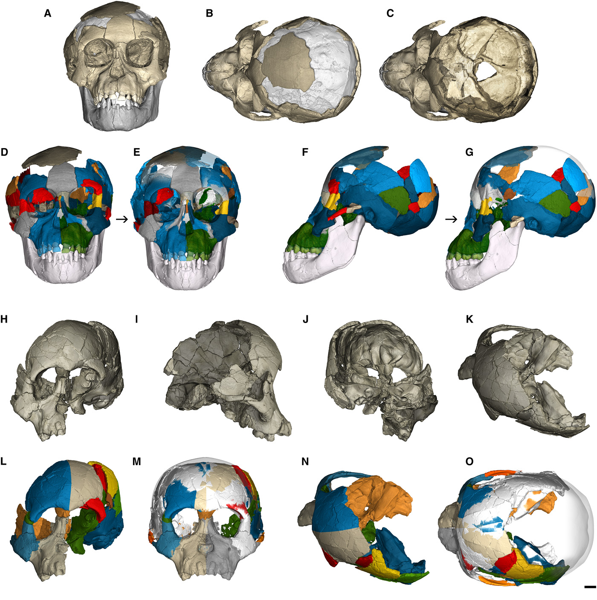

![]()
flowchart TD
A["Witnesses"] --> B["Police"]
C["Involved parties"] --> B["Police"]
Bs["Bystanders"] --> B
E("Field investigation") ---> B
F("Material evidence") --> E
B ---> Cor["Coronial inquest"]
P["Pathologist"] --> Cor
X["Expert witnesses"] --> Cor
X -.-> B
E -.-> Bs
Teams of Rivals
AI
LLMs
agents
Finally, some discussion on LLM connectionism, and what LLMs could usefully become.
In the first four entries (1 2 3 4) of this sequence, I have focused primarily on what LLMs aren’t, can’t, won’t, wouldn’t and shouldn’t. It’s probably time to conclude this series by that much awaited moment in all stories, where the darkest night finally turns into a glorious dawn, where we finally arrive at the promised land, where we finally get to talk about what LLMs could be.
What I see as the most successful potential model of using LLMs is as a pack of semi-autonomous decision-makers with their own role, competing in a connectionistic, hierarchical model where each layer feeds into the next that performs some adjudicative or aggregative function. Structured this way, LLMs could become teams of rivals, analogous to the teams of rivals in the real world that we rely on to answer hard questions. For what that would look like, we might need to look at a story of my own. This story begins on the morning of 01 December 1948 on Somerton Beach, near Adelaide, Australia.
Tamam shud
On that fateful morning, the body of a middle aged man was found, slumped against the seawall at Somerton Beach, dead of causes that were far from clear. Neither was his identity, as he did not carry identification (quite unusual at the time, so close after wartime, when identification was still mandatory), nor could his identity be ascertained by other means. It was, in fact, clear that he went some lengths to conceal his identity, having even removed the manufacturers’ tags from his clothes. The autopsy performed by the police pathologist only compounded the mystery by identifying multiple potential causes, each of which would have been sufficient to bring about the unknown man’s demise. The mystery kept compounding when a scrap from Omar Khayyam’s Rubaiyat was found in his pocket. It read tamam shud, which roughly translates to “it is finished”. Investigators traced this copy of the Rubaiyat to a copy belonging to a young lady whose identity wouldn’t be revealed until after her death in the 1990s, and whose involvement remains unclear. What appeared to be an acrostic cypher was also found in his notes. And so began a three-quarter-century mystery that has captivated many, including the author of these lines.
To this day, the exact identity of the Somerton Man, who he really was and why he had to die, remains unknown. The DNA Doe Project, who have a pretty good track record at this sort of stuff, have identified him as Carl Webb, an Australian instrument maker and electrical engineer. This raises more questions than it answers. And while it is undoubtedly one of the most intriguing of human stories, it is also an interesting lesson in the way we arrive at knowledge and understanding.
In Commonwealth jurisdictions, coroners are judicial officers tasked with determining who the decedent is, the place and time of their death and how the decedent “came by his death”, a somewhat archaic way of describing the narrow question of causation.
Human processes intended to find the truth are complex, as Figure 1 shows. In general, we rely on three key features:
- Adversariality: especially in adversarial legal systems, we use parties with opposing motivations and interests to act as controls on the other side. The idea is that no party has as much of an incentive to poke holes in the other side’s case as someone whose interests are incompatible with the other side’s. This is why we have the adversarial system in the first place, as opposed to a single dispassionate judge who is supposed to be the sole arbiter of truth. The adversarial system is a way of using the self-interest of the parties to arrive at the truth. It essentially outsources the job of finding the truth to the parties, who are supposed to be motivated to control the other side because it is in their interest to do so.
Coronial hearings are inquisitorial, not adversarial, but there’s an element of adversariality in the way the coroner is supposed to investigate the causal hypotheses put to him.
- Hierarchicality: we use layers of hierarchically arranged players to arrive at the truth. Quite typically, these are hierarchies of adjudication, where each ‘layer’ looks at the previous layer’s products and works to determine which of potentially multiple competing hypotheses are going to prevail. This may be the product of an adversarial layer, or it may simply be review, as would be the case where one layer looks at what a previous layer’s findings were and decides whether they were correct or not, against some superordinate norm or evidential rules.
If you’ve ever watched Law & Order, you know what I’m talking about here. Police gather evidence, DAs build a case and plead it, and the judge and jury decide.
- Roles: we use players who are specialists of roles, not general ‘truth-finding agents’. The purview of the police pathologist is different from that of a witness. Authority is limited by their role. In short, everyone wields – to borrow Stephen Jay Gould’s term – an epistemic ‘magisterium’, a domain over which their authority is valid.
The case of the Somerton Man is particularly illustrative of this: there were different experts for toxicology, a pathologist, even a witness on tram times.
These three features are what make human processes of truth-finding work. Truth-finding is the work of a team of rivals, with often orthogonally opposed interests but ultimately in the same enterprise of discerning truth. And this is what LLMs could be: teams of rivals, each with their own magisterium, each with their own role, each with their own motivations and interests, but ultimately working towards the same goal.
Dueling LLMs
Let’s assume that we’re faced with something simpler than a 75-year-old Cold War mystery. Say, we’re interested in something this simple: we want to make a cheesecake that is tasty, low-calorie, easy to make in no more than an hour and does not require any special ingredients. We could use a single LLM to do this:
スフレチーズケーキ (soufflé cheesecake)
- 1tbsp unsalted butter
- 6 large eggs - separate out the yolks
- 10oz cream cheese
- 4tbsp unsalted butter
- 1 cup heavy cream
- 4tbsp sugar
- 1 cup cake flour
- 2tbsp lemon juice
- 2tbsp jam of your choice
Grease cake pan and line with parchment paper. Preheat oven to 350ºF. Mix cream cheese, butter and sugar in a bowl submerged in a saucepan of warm(ish) water. Add the egg yolks and using a strainer, sift the cake flour. Filter and add lemon juice and some lemon zest, if you have any hanging around. Whisk up the egg whites and gently mix it into the main mixture. This should make it somewhat nicely frothy. Pour into cake pan. Place cake pan onto baking sheet. Bake for 60 minutes or so. When done, turn off the heat, open the door and brush with your jam diluted at around 1:1 ratio with warm water. Apricot jam works best, but I won’t judge you for your choice.
flowchart TD
A["What's a good cheesecake recipe..."] --> B["Here's a recipe..."]
Here’s a better approach:
flowchart TD
A["What's a good cheesecake recipe..."]
A --> G1
A --> G2
A --> GN
G1["Generator 1"] --> r1("Recipe 1")
G2["Generator 2"] --> r2("Recipe 2")
GN["Generator n"] --> rn("Recipe n")
r1 --> Dt["Tastiness\ndiscriminator"]
r2 --> Dt
rn --> Dt
r1 --> Tt["Time\ndiscriminator"]
r2 --> Tt
rn --> Tt
r1 --> Id["Ingredients\ndiscriminator"]
r2 --> Id
rn --> Id
Dt --> jagg["Judgment aggregator"]
Tt --> jagg
Id --> jagg
jagg --> rs("Selected recipe")
jagg --> rdc("Decisional context")
rs --> G1p["Generator 1"]
rs --> G2p["Generator 2"]
rs --> GNp["Generator n"]
rdc --> G1p["Generator 1"]
rdc --> G2p["Generator 2"]
rdc --> GNp["Generator n"]
Note the ‘rivalry’ between various generators, each of which is trying to produce a recipe that satisfies the criteria. If this reminds you of a little something you might have seen before called adversarial generative networks, you are not wrong. In both cases, we are using discriminators to determine how good a particular output is, and tweak parameters to start selecting for outputs that have higher acceptance, i.e. outputs the discriminator believes is more likely to meet the criteria we posed. Where this model transcends the mere generative adversarial model is in two ways: the use of roles and the use of propagating the decisional context.
The decisional context refers to the ‘why’ of the decision. In the case of the cheesecake, it would be the reasons why the selected recipes were selected. This is important because it allows us to propagate the decisional context to the generators, so that they can learn from it and produce better outputs. This is a form of meta-learning, where the generators learn from the way their past performance was evaluated, and use it to produce better outputs. Unlike reinforcement learning or adversarial learning, it leverages the fact that LLMs can take in a broader ambit of information: not just the relatively binary outcome of what prevailed but also the why.
We leverage roles of discriminators, and these can be nested and hierarchically structured to an arbitrary degree. Recall that the discriminator in a GAN could essentially go one way: accept or reject, with a given match likelihood. Not only can we have specialised discriminators here, we can also build networks of discriminators. For instance, we may ‘explode’ the notion of ingredient “availability” into subcomponents: what fruits are in season for the cheesecake, what is ubiquitous at one’s individual location and so on. This again brings us to the ‘strength of the pack’: the connectionist idea that we can create hierarchically layered simple units that can produce complex outputs.
We leverage the decisional context because we have something that can generate in response to a why. This is a key difference between LLMs and other machine learning models: they can take in a broader ambit of information, and they can generate in response to that. A typical backpropagative model still ‘learns’ the way all ML models do: by trial and error. LLMs can learn from feedback. They can learn not just from the fact of their success or failure but also from the cause of that outcome, as explained to it by another agent –– which can of course be an LLM.
In short, what we want is a team of rival LLMs, loudly arguing their case, and another team of LLMs assessing their relative claims. These, in turn, may be given incentives to compete. The end result is a cognitive net structure that uses LLMs not as ends in themselves but as primitives, whether it be as simple discriminators or as more complex agents. Figure 3 does not merely describe a more complex structure than Figure 2 – it does, but that’s really not the point. The point is that different roles and functions create emergence faster than the best single LLM. We see this in the difference between simple multilayer perceptrons, which are essentially identical layers of neurons with activation functions thrown on top of each other, versus modern deep learning, which relies on different layers (pooling, convolution and so on). This is, incidentally, a very well learned lesson from neuroscience: the complexity emerges not from heaping neurons on top of each other, but from doing so with quite significantly different structures and functions.
I’ve skimmed this point on my post about prompt engineering, but it bears repeating: the best single LLM is not as good as a team of rival LLMs.
Into the wild
Something that more complex architectures are capable of that a single question-answering LLM won’t is to be able to deal with the real world. The real world is messy, and it exists beyond the confines of code. I trust that we’ve all overcome our instinctual fear that AI models interacting with the physical world seem to engender these days. I think we can safely conclude that Skynet won’t emerge from letting an LLM agent use Google. If we grant that, then we can move towards the next step: the tool-using LLM.
At some point a little under 4 million years ago, in what is today Ethiopia, a particularly clever ancestor of ours, the hominin Australopithecus afarensis, used a kind of a primitive middle ground between a knife and an axe to dismember his prey. This might have been the first evidence we have for tool use. We consider tool use to be one of those watershed moments (I wrote about the other one here) where we got something that wasn’t just doing what it has been except better, but a qualitatively different creature. Tool use is how we really interact with our environment, and how we can probe that environment and learn from what it does in return. Giving LLMs the tools to be ‘out in the world’ is to give them the kind of agency that is required to learn and operate in an autonomous way that goes beyond RLHF (reinforcement learning by human feedback), the current paradigm of training LLMs. At some point, we will need to let them loose in the wild, and let them learn from their own experience. We need to let them have experience, and that’s arguably more important than what an agentic LLM can do for us. In the end, we’ve all learned more through the mistakes (often hilarious ones) we’ve stumbled into in the real world than we ever did in the classroom. And so will LLMs.

Tool use is not just about learning, though. It’s also about the utility of these models to us. The ubiquitous “knowledge cutoff” message encountered with LLMs is an indication of what happens if LLMs are stagnant: they become reflections of the past, echoes of what they were taught rather than actual interacting entities. If we want them to live in the present, we need to teach them to interact with the present.
Team building
The main task, then, for AI developers is going to be one of building these teams of rivals. This process, if other connectionist systems (looking at you, neural networks) is anything to go by, will require a lot less human effort than we’d think. There’s no reason why LLMs themselves can’t take some of the role in constructing these teams the way the structure of deep learning effectively builds its own filters and feature extractors from its own ‘experience’. The equivalent of structuring deep learning models’ architectures by determining layer types and their connections is borne out in how we build these virtual teams of rival LLMs.
flowchart TD
Input --> L1
subgraph L1["Layer 1"]
L11["Convolution + ReLu"] --> P11["Pooling"]
end
L1 --> L2
subgraph L2["Layer 2"]
L21["Convolution + ReLu"] --> P21["Pooling"]
end
L2 -.-> LN
subgraph LN["Layer N"]
LN1["Convolution + ReLu"] --> PN1["Pooling"]
end
LN --> F
F["Flatten"] --> FCN["FCN"]
FCN --> Softmax
Softmax --> Output
I2["Input"]
subgraph LL1["Layer 1"]
LLL1["Generator"] --> LLL2["Discriminator 1"]
LLL1 --> LLL22["Discriminator 2"]
LLL1 --> LLL2N["Discriminator n"]
end
I2 --> LL1
subgraph LL2["Layer 2"]
LL2G["Generator"] --> LL2D["Discriminator"]
LL2G --> LLL2D2["Discriminator 2"]
LL2G --> LLL2DN["Discriminator n"]
end
LL1 -->|Decision + context| LL2
subgraph LLN["Layer n"]
LLNG["Generator"] --> LLND1["Discriminator 1"]
LLNG --> LLND2["Discriminator 2"]
LLNG --> LLNDN["Discriminator N"]
end
LL2 -.->|Decision + context| LLN
LLN --> P["Parser"]
P --> Q["Output"]
Of course, the structure laid out in Figure 4 is the simplest possible such construct, consisting essentially of a single type of layer for the most part. We know from deep learning that that can get us a pretty long way if the first and last layers are right, but in addition to different kinds of discriminators (the way we had different discriminators for time, ingredients and so on in our example in Figure 3), we can interject three other kinds of players:
- Supervisors: One unhelpful tendency of LLMs is that they are still somewhat autoregressive, meaning that every token generated conditions the next token’s likelihood, and so on. The consequence is that errors accumulate. Supervisors can stem this tendency by interposing themselves between stages of generative inputs and curbing this accumulative error.
- Aggregators: These are the players that take the outputs of the discriminators and aggregate them into a single output. This is the equivalent of the ‘judgment aggregator’ in Figure 3, which ultimately chooses the correct recipe.
- Encapsulators: These players take the output from a fairly complex system and give us the simple(ish) output that we typically desire from most such systems. The system’s own inherent complexity notwithstanding, we often want simple answers even to complex questions, no matter with how much complexity those answers were arrived at. Encapsulators are the players that give us that simple answer.
The possibility exists, of course, for other new kinds of players. Just as we have seen the emergence of new architectures in deep learning, we’ll likely see new forms of utilisation that are at this point still unexpected.
As well as novel, unexpected uses of existing models. The archetypal example here is, of course, the transformer, which was initially designed for machine translation. Safe to say that it far exceeded the confines of its expected niche.
Yao, Shunyu, Jeffrey Zhao, Dian Yu, Nan Du, Izhak Shafran, Karthik Narasimhan, and Yuan Cao. 2022. ‘React: Synergizing Reasoning and Acting in Language Models’. arXiv Preprint arXiv:2210.03629.
All of this is augmented by an arsenal of tools. A tool, in this context, is quite simply a way an LLM can interact with the world outside of itself. If linking together LLMs creates the rudiments of reasoning, this creates the basics of action. Together, reasoning and acting (which gave the popular ReAct paradigm (see Yao et al. 2022) its name, but is much more ubiquitous than that, of course) make up the components of agency that elevate LLMs beyond simple question answering and move it towards a kind of semi-autonomous reasoned action. Such tools may be retrievers, interactors or indeed anything that can be articulated in code.
flowchart TD
Q["What's a good cheesecake recipe?"] -.-> dots["..."]
dots --> jagg["Judgment aggregator"]
jagg --> FA["Final recipe"]
FA --> SC["Shopping cart"]
SC -->|missing items| jagg
jagg -.-> dots
As Figure 5 illustrates, this is not a simple one-directional approach. If an LLM ‘lives in the world’, it does not merely put out information, but also ingests information from it. For instance, if the ‘winning’ recipe calls for, say, grated lemon peel, but none can be had for love or money, the LLM needs to be able to adapt to that. This is where the ‘judgment aggregator’ comes in: it can take in the information that a particular ingredient is not available, and feed that back into the system and adapt. LLMs can learn from feedback, and respond to the substance of feedback, rather than merely its fact(ual existence). This sets them apart from other ML models. And to me, this is what truly charts the course of their future.
Conclusion
This is the fifth and final post in a five-part sequence on what LLMs aren’t, and what they are, and what they could become, as the state of the art stands in late 2023. Beyond the anxiety and the abundant misunderstandings that have dominated discourse, there is something old and something new at play at the same time. That’s the kind of fault line where interesting things happen.
I am putting the finishing touches on this post at SFO, a few miles from one of the most unstable fault lines in the Earth’s tectonic structure. The geographical determinist in me likes to think that being so near a fault line, so near a part of the Earth that is constantly reshaping itself – and will likely reshape anything taller than three stories in a pretty permanent and non-beneficial way – has played a role in Silicon Valley becoming what it is (or was?). Fault lines are where interesting stuff happens. The fault line between ‘traditional’ ML models and LLMs, which are undeniably somewhat novel if for nothing else their ability to interact with us in our most cherished human form of interaction – language –, is where interesting stuff is bound to happen. Like earthquakes, any pretense at being able to predict all but the most immediate future is folly and delusion, so I shall be careful not to do so. But I do think that the future of LLMs is not in the direction of the ‘big’ LLMs that are currently in vogue, but in the direction of smaller, more specialised LLMs that can interact with us, and with each other, in the role-defined and goal-directed agentic manner in which we as humans have interacted for our history.
And there, as players on teams of rivals, is where LLMs will truly unfold their potential, tackling and embracing complexity to a degree that we have not seen before.
And that’s where the real fun begins.
Citation
BibTeX citation:
@misc{csefalvay2023,
author = {{Chris von Csefalvay}},
title = {Teams of {Rivals}},
date = {2023-10-30},
url = {https://chrisvoncsefalvay.com/posts/team-of-rivals/},
doi = {10.59350/he7k6-tx158},
langid = {en-GB}
}
For attribution, please cite this work as:
Chris von Csefalvay. 2023. “Teams of Rivals.” https://doi.org/10.59350/he7k6-tx158.